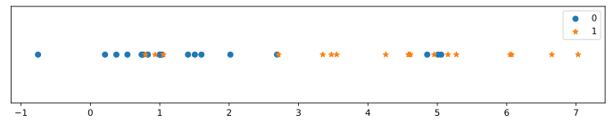
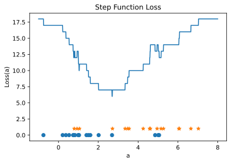
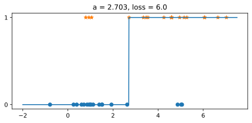
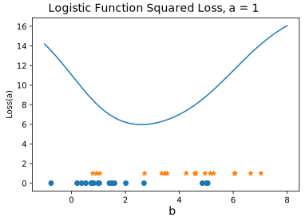

Week 10/11: Logistic Regression
Chris Tralie
Step Function Regression for 1D Data And Grid Search
Let's consider the following supervised learning problem. We have data with a single coordinate and two classes we want to sort it into: blue dots (0) or orange stars (1), as shown below:
For our model, let's try to create a function of a single variable x that returns a 0 for some ranges of x where we find the blue dots, and a 1 for other ranges of x where we find the orange dots. The simplest possible function we could define is a step function
\[ s_a(x) = \left\{ \begin{array}{cc} 1 & x > a \\ 0 & x \leq a \end{array} \right\} \]
In other words, we want to find a single threshold a above which we believe we have an orange star, and below which we've decided we have a blue dot. We shouldn't expect to get this 100% correct on the above example since they're mixed together a bit, but this is not a bad model since most of the orange stars are to the right of most of the blue dots.
To score how well different a values work across all of our data points (xi, yi) (where yi is the label, either 0 or 1, that xi has), we can use a squared loss loss function which is the sum of the squared distances between fa(xi) and the true values of the dots. This loss would look like this
\[ L(a) = \sum_{i = 1}^N (s_a(x_i) - y_i)^2 \]
In the case of the step function on the above data, this means we add a penalty of 1 for every point that is misclassified. If we think back to calc 1, the way that we usually minimize functions is by finding critical points. Most of the critical points are found by setting the derivative equal to 0 and solving. The problem with the step function, though, is that it's non-differentiable, so this becomes a pain. We can instead use something called grid search where we try a whole bunch of values evenly spaced over an interval and see which one leads to a min (an even smarter thing to do in 1D is to use golden section search). Here's some code that does grid search with 1000 points over the interval [-1, 8]
If we do this on the above example and plot the loss function at each a we try, we get this:
There are a few global mins at a loss of 6, one of which occurs at around a = 2.7. As shown below, if we plot the value of the step function versus the ground truth value of our data (class 0 or class 1), we can see that 3 orange points got misclassified and 3 blue points got misclassified.
This seems like it worked out pretty well! The problem is that it doesn't scale if we're trying to fit a model that has more than one parameter. For example, if we have two parameters and we likewise divvy up the range into 1000 evenly spaced regions for each parameter, we have to try a million parameter combinations. If we have 3 parameters, we have to try a billion. And in general, if we take N samples of each parameter and we have P parameters, we will have to try NP parameter combinations! This is known as the curse of dimensionality. To give you an idea of how bad this is, when we go to classify images, we will have on parameter for pixel. In a fairly small 100x100 image, this is 10,000 pixels. If we try even a paltry 10 unique parameter values in grid search, we get 1010,000 different combinations, which is beyond astronomical. We're definitely going to need a more sophisticated technique.
1D Logistic Regression
Let's now try to come up with something that acts like the step function but which is differentiable. We'll use something called the logistic function, which is defined as
\[ f(u) = \frac{1}{1+e^{-u}} \]
If you plot it, you'll see it's like a step function that makes a smooth transition from 0 to 1

This means it acts like the function we were looking for that chooses a boundary between the objects in class 0 and class 1, but it's differentiable. If we use the chain rule, we can compute its derivative as
\[ \frac{d f(u)}{du} = \frac{1}{1+e^{-u}} = \frac{e^{-u}}{(1+e^{-u})^2} \]
Actually, there's a really slick way to rewrite this as just the following (which you can check with some algebraic manipulations)
\[ \frac{d f(u)}{du} = f(u)(1-f(u)) \]
Now let's think about how we might fit the logistic function to our data. Actually, we'll allow ourselves to have two parameters now: one called a which controls the sharpness of the increase from 0 to 1, and one called b which controls a horizontal shift (at this point you may want to stop and review how to stretch out and horizontally shift functions). In particular, we'll consider how the equation
\[ f(ax + b) = \frac{1}{1+e^{-ax - b}} \]
best fits our data. Then we can define our squared loss loss function as follows
\[ L(a, b) = \sum_{i=1}^N \left( \frac{1}{1+e^{-ax_i - b}} - y_i \right)^2 \]
We want to minimize this function. As an example of what this looks like, let's fix a = 1 and look at grid search again over the horizontal shift parameter b
But let's see what we can do towards optimizing both parameters jointly with a more sophisticated technique. In class, we saw how instead of doing a full on grid search, we could look in a small neighborhood around each point and walk in the direction of where the function seems to be decreasing, and then to repeat this process. One fundamental optimization technique for doing mathematically is gradient descent, whereby we compute the derivative of our loss with respect to each parameter, treating everything else as a constant. This is referred to as the partial derivative ∂ with respect to each parameter. For example, let's consider the partial derivative of our loss with respect to the parameter a. We can obtain this with multiple applications of the chain rule, noting that everything other than a is a constant
\[ \frac{\partial L(a, b)}{\partial a} = \sum_{i = 1}^N \frac{\partial (f(ax_i+b) - y_i)^2}{\partial a} = \sum_{i=1}^N 2(f(ax_i+b) - y_i) \frac{\partial f(ax_i+b)}{\partial a} \]
\[ \frac{\partial L(a, b)}{\partial a} = 2(f(ax_i+b) - y_i) f(ax_i+b)(1-f(ax_i+b)) \frac{\partial ax_i+b}{\partial a}\]
and finally
\[ \frac{\partial L(a, b)}{\partial a} = \sum_{i=1}^N 2x_i (f(ax_i+b) - y_i) f(ax_i+b)(1-f(ax_i+b)) \]
By a similar procedure, we find that the partial derivative with respect to b is
\[ \frac{\partial L(a, b)}{\partial b} = \sum_{i=1}^N 2(f(ax_i+b) - y_i) f(ax_i+b)(1-f(ax_i+b)) \]
Since the derivative tells us how the function is increasing, we want to walk along the opposite direction. Therefore, we will update our parameters a and b by subtracting some nonnegative constant μ times the derivative. This parameter μ is sometimes referred to as the learning rate
- \[ a \gets a - \mu \frac{\partial L(a, b)}{\partial a}\]
- \[ b \gets b - \mu \frac{\partial L(a, b)}{\partial b}\]
Here's what gradient descent looks like after modifying the starter code here, with a step μ = 0.1

This step size is a bit large and causes it to zig zag. Here is a smaller step size μ = 0.01, which moves more slowly but which does not cause the same zig zagging:

We should be mindful of this tradeoff as we choose our learning rate.
Separating Lines in 2D / Higher Dimensional Logistic Regression
We can extend these ideas to higher dimensions. The very next dimension up leads us to a procedure for separating lines in 2D. Here, the boundary decision boundary is described with the equation ax + by + c = 0, so there are three parameters: a, b, and c. Let's now suppose the class labels of our planar data points (xi, yi) are called zi to avoid a variable name collision. This leads us towards minimizing the loss function
\[ L(a, b, c) = \sum_{i=1}^N \left( \frac{1}{1+e^{-ax_i - by_i - c}} - z_i \right)^2 \]
We can work through similar math to find the following update rules for gradient descent
- \[ a \gets a - \mu \frac{\partial L(a, b, c)}{\partial a}\]
- \[ b \gets b - \mu \frac{\partial L(a, b, c)}{\partial b}\]
- \[ c \gets c - \mu \frac{\partial L(a, b, c)}{\partial c}\]
where
\[ \frac{\partial L(a, b, c)}{\partial a} = \sum_{i=1}^N 2x_i (f(ax_i+by_i+c) - z_i) f(ax_i+by_i+c)(1-f(ax_i+by_i+c)) \]
\[ \frac{\partial L(a, b, c)}{\partial b} = \sum_{i=1}^N 2y_i (f(ax_i+by_i+c) - z_i) f(ax_i+by_i+c)(1-f(ax_i+by_i+c)) \]
\[ \frac{\partial L(a, b, c)}{\partial c} = \sum_{i=1}^N 2 (f(ax_i+by_i+c) - z_i) f(ax_i+by_i+c)(1-f(ax_i+by_i+c)) \]
Here's an example of a working implementation of gradient descent on 2D data starting from this file

Here's another example where the line started off in the backwards orientation

Here's an example where the data isn't separable

Higher Dimensions
In general, we can run logistic regression on d independent variables x1, x2, ... xd by fitting with the logistic function composed with
In that case, we can update all of the w's as
\[ \frac{\partial L(w_1, w_2, ..., w_d, c)}{\partial w_k} = \sum_{i=1}^N 2 x_k( f(\vec{w}, c) - z_i) f(\vec{w}, c)(1-f(\vec{w}, c)) \]
\[ \frac{\partial L(w_1, w_2, ..., w_d, c)}{\partial c} = \sum_{i=1}^N 2 ( f(\vec{w}, c) - z_i) f(\vec{w}, c)(1-f(\vec{w}, c)) \]
where
\[ f(\vec{w}, c) = f( w_1x_1 + w_2x_2 + ... + w_dx_d + c ) \]
This is what you'll be doing with the movie reviews on homework 6